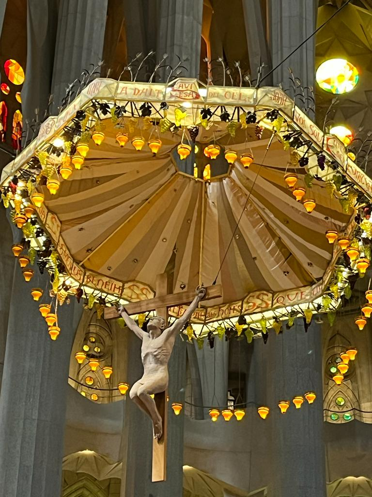
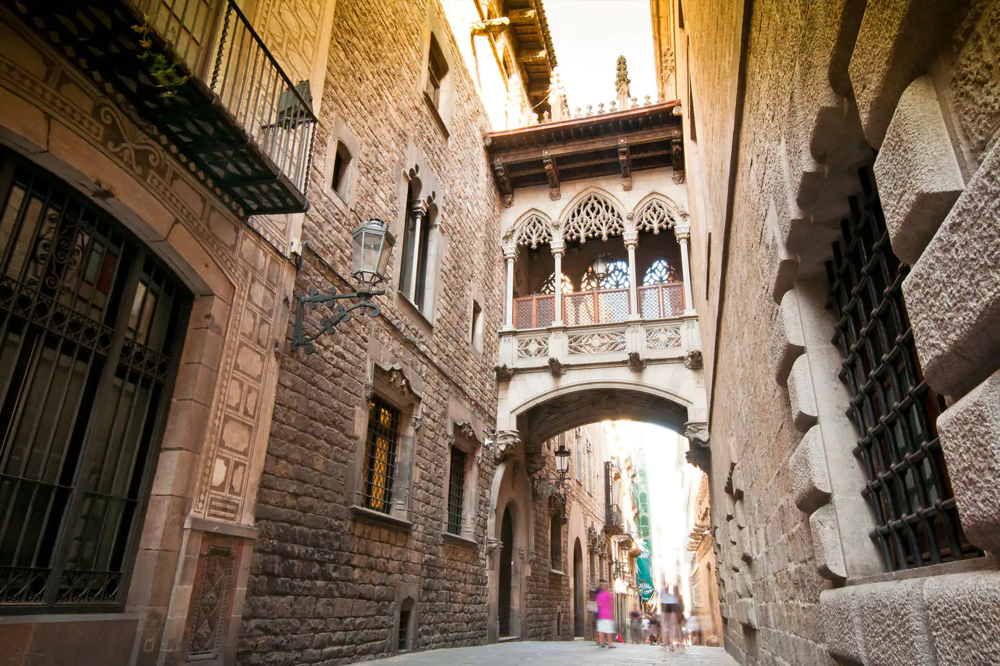

Construido con motivo de la Exposición Universal de 1888, el Arco de Triunfo encabezaba el paseo que conducía hasta la entrada principal de la feria, en el parque de la Ciutadella, que se acababa de inaugurar. El monumento, de ladrillo rojo y de estilo neomudéjar, respondía al gusto por la ornamentación y el eclecticismo tan característico del modernismo catalán, en auge en aquellos años..
Antoni Gaudí es uno de los grandes arquitectos que han influenciado enormemente el diseño de los edificios de la ciudad. La construcción del templo expiatorio de La Sagrada Familia comenzó en 1882 y aún sigue en obras muchos años después de su muerte. Para la entrada principal, Gaudí eligió como inspiración el burro de una mujer que vendía arena allí mismo.

El modernismo catalán surge entre los siglos XIX y XX fruto de la Reinaxença, un movimiento cultural y literario que busca el renacer del catalán como lengua literaria y cultural Así, el modernismo se basaba en la naturaleza para encontrar nuevas formas arquitectónicas. También se caracteriza por una mayor libertad creativa, con el predominio de las líneas curvas, la presencia de materiales como el hierro forjado, la cerámica, los azulejos o las vidrieras, el uso de colores brillantes e intensos y una rica decoración. Los máximos exponentes de este estilo arquitectónico catalán fueron Lluís Domènech i Montaner en la corriente racionalista y Antoni Gaudí en la corriente irracionalista. El Palau de la Música, la Casa de Lleó Morera o la Casa Terrades son algunos ejemplos.

Construida para la Exposición Internacional de 1929, la Plaza de España de Barcelona es, con 34.000 metros cuadrados, la segunda mayor del país tras la Plaza de España de Madrid. Ubicada a los pies de la montaña de Montjuïc, los arquitectos Josep Puig i Cadafalch y Guillem Busquets (las obras serían concluidas por Antoni Darder) se propusieron crear una plaza monumental que ejerciera de eje de comunicación para grandes arterias de Barcelona como la Gran Via de les Corts Catalanes y la avenida del Parallel. Al mismo tiempo, la Plaza de España fue la puerta de acceso al recinto de Montjuïc donde se desarrolló la gran exposición. Hoy en ese recinto se ubica la Fira de Barcelona, uno de los recintos feriales urbanos grandes y potentes del mundo.

La playa de la Barceloneta es un lugar muy popular del barrio de pescadores del mismo nombre, donde te recibirá una agradable arena y una variada oferta de restaurantes de pescado y marisco. La playa ofrece un amplio espacio para relajarte o divertirte practicando tenis o voleibol. También cuenta con socorristas, de modo que no tendrás nada de lo que preocuparte cuando tú o los más pequeños os deis un chapuzón. A todo esto hay que añadir el valor histórico de la playa, ya que se cree que es el lugar en el que se inspiró Miguel de Cervantes para situar el duelo entre don Quijote y el caballero de la Blanca Luna, del que este último salió perdedor.
Luces y colores El uso de las luces y los colores para ambientar los interiores de la Sagrada Familia es otro de los aspectos más destacados de la obra de Gaudí, que también hace que la iglesia esté tan cerca de parecer el paraíso. Las grandes y vibrantes vidrieras de la Sagrada Familia pintan el interior de la basílica con tonalidades de rojo, verde, azul y amarillo. Para lograr este equilibrio entre los colores del vidrio y la luz natural, la disposición se ha hecho de tal manera que las ventanas de colores brillantes se colocan en la parte inferior y las translúcidas en la parte superior. Así se iluminan los interiores, creando el escenario perfecto para la oración y la meditación. Los colores de cada una de las ventanas tienen representaciones sagradas: el amarillo, el verde y el azul del portal del Nacimiento simbolizan la pobreza, la luz y el nacimiento de Cristo; mientras que el rojo, el amarillo y el naranja del portal de la Pasión aluden al agua, la resurrección y la luz.

El Recinto Modernista de Sant Pau, construido entre 1905 y 1930, fue ideado por Lluís Domènech i Montaner como una ciudad-jardín para los enfermos. Después de servir durante un siglo como hospital público, sus pabellones rehabilitados lucen hoy en todo su esplendor. Visitar este conjunto arquitectónico tan excepcional es una experiencia única. Este conjunto modernista, el más importante de Europa, es hoy en día un referente de la riqueza monumental de Barcelona, y también de su espíritu innovador. Declarado el año 1997 Patrimonio Mundial por la UNESCO, su valor arquitectónico y artístico adquiere una nueva dimensión internacional con los nuevos usos de los pabellones. El recinto es ahora un campus de conocimiento y sede de organismos de ámbito internacional, como el Instituto Forestal Europeo, la Casa Àsia, la Global University Network for Innovation, o el Instituto de la Universidad de Naciones Unidas sobre Globalización, Cultura y Movilidad.
La Casa Batlló es Patrimonio de la Humanidad y una de las mejores obras de Gaudí en Barcelona. Esta joya del modernismo catalán, situada en el elegante Paseo de Gracia, te impresiona a primera vista por su espectacular fachada inspirada en las formas orgánicas de la naturaleza. Además de maravillarte con su exterior, posee un interior lleno de magia y fantasía gracias a sus formas onduladas, el patio de luces y la azotea llena de chimeneas sorprendentes.
El barrio Gótico es el centro de la antigua Barcelona. De hecho, algunos edificios hunden sus raíces en la época romana. La arquitectura medieval te saldrá al paso en cada rincón, y su magia es la razón por la que más de un millón de turistas visita la ciudad cada semana.